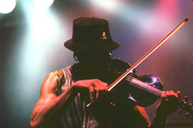

|
|
As the last one to join, violinist Boyd Tinsley may be the member of the Dave Matthews Band least surprised by its success. "When I first heard this band, I knew it was something special," says Tinsley, who was asked in early 1991 to play on the demo song "Tripping Billies" and hooked up with the band full-time later that year. "When I first heard these songs played by these musicians, it was some of the most powerful stuff I'd heard in a long time. It doesn't surprise me it works." Tinsley certainly has the musical grounding from which to judge. A native of Charlottesville, who grew up in the same neighborhood as drummer Carter Beauford and saxophonist Leroi Moore, Tinsley was raised in a musical household. His father directed the church choir and an uncle played upright bass and trumpet in local jazz bands. There was a steady stream of Motown pumping out of the family stereo, as well.
Tinsley says he "stumbled into" playing the violin. His first desire was to play guitar, so he signed up for a middle school strings class - only to learn, of course, that it was for orchestral instruments. He was intrigued enough to take up the violin and quickly became proficient, though he notes that "my dog and my family hated me for a good couple of years" while he learned. As a teenager, he helped found the Charlottesville-Albemarle Youth Orchestra (which DMB bassist Stefan Lessard joined years later) and studied under the tutelage of Isador Saslav, the concertmaster of the Baltimore Symphony Orchestra. That was a pivotal moment for Tinsley. Saslav wanted him to move to Baltimore to further his studies, but at 16 the young violinist wasn't ready to leave home and make the sacrifices it would require to become a virtuoso. "That's when I decided I didn't want to pursue classical music seriously," Tinsley says. Instead, he immersed himself in the works of highly regarded players such as Stephan Grappelli, Jean-Luc Ponty and Papa John Creach, all of whom worked in the realms of jazz, rock and blues. He further expanded his chops while attending the University of Virginia, where his fraternity, Sigma Nu, held periodic coffeehouses. With open to the public jam sessions that lasted all night, they attracted not only the cream of the local crop but visiting musical luminaries such as Hot Tuna/Jefferson Airplane guitarist Jorma Kaukonen and Muddy Waters sideman Bob Margolin. His own projects- a duo called Down Boy Down and an electric group under his own name- were set aside when the DMB opportunity was presented to him.
Tinsley says he plans to record a solo album some day, but his chief extra-band activity is modeling. He has appeared in spreads and on billboards for JanSport, a runway show for Cynthia Rowley and recently modeled a Tommy Hilfiger and Gucci ensemble in the Los Angeles Times. "I just like clothes," he says. "It's definitely sort of a breather from the whole intensity of getting on stage or recording an album. Put some clothes on and take a picture? Hey, why not."